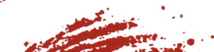
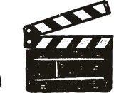
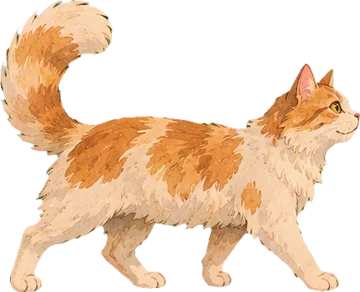
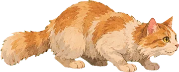
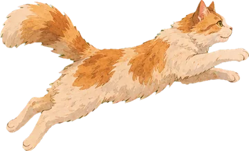
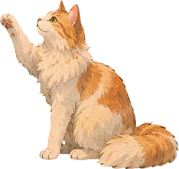
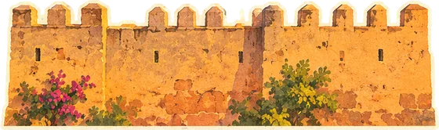
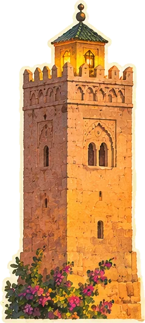
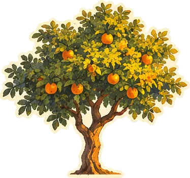

Elephants Dream
★★★½
Strange, and I can’t stopthinking about it.

Movies, shows and anime in one place, with your taste and your history kept in your own Google Drive.
Get startedBring a paid TorBox account. Sign in with Google.
A space for each person, with their own history and theme.

Log, rate and revisit what you’ve seen.
Spin it, and start from a feeling.
Movies, shows and anime together.

Now showing
Thirty-one seconds, sound on.

The watch diary
Log what you watched, leave a rating and add a note. The Diary keeps the details, stats reveal your habits, and Year in Review brings your watching year back into view.

The mood wheel
Comfort watch? Something strange? A little adrenaline? Spin the wheel to find a direction, then explore the picks. Go on, grab it.
Tonight feels like

Open the book



A few good questions